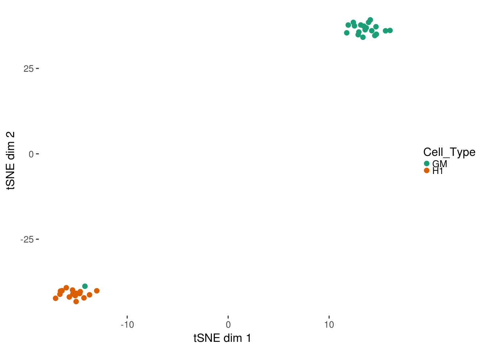
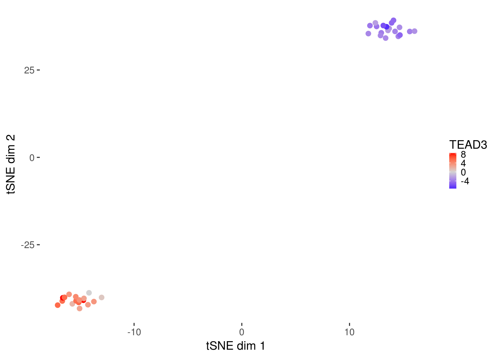

chromVAR
chromVAR is an R package for the analysis of sparse chromatin accessibility. chromVAR takes as inputs aligned fragments (filtered for duplicates and low quality) from ATAC-seq or DNAse-seq experiments as well as genomic annotations such as motif positions. chromVAR computes for each annotation and each cell or sample a bias corrected “deviation” in accessibility from the expected accessibility based on the average of all the cells or samples.
This vignette covers basic usage of chromVAR with standard inputs. For more detailed documentation covering different options for various inputs and additional applications, view the Articles.
Installation
Installation is easiest using the devtools package. The function install_github will install the package.
devtools::install_github("GreenleafLab/chromVAR", auth_token = "my_token")The argument auth_token takes in your github personal access token. This token is needed because at the moment this repository is private.
Two additional packages that are recommended and used in the vignettes:
- motifmatchr - available on GitHub
- JASPAR2016 - available from Bioconductor
Depending on your repository settings, the Bioconductor dependencies may fail to install. Use setRepositories(graphics=FALSE) to see what repositories you have activated and to add the BioC software repository if need be. You may also have to install some of the BioConductor packages manually, and possible some non-R dependencies for some of the Bioconductor packages.
Loading the package
Use library or require to load the package and useful additional packages.
library(chromVAR)
library(motifmatchr)
library(Matrix)
library(SummarizedExperiment)
set.seed(2017)Setting multiprocessing options
The package uses BiocParallel to do the multiprocessing. Check the documentation for BiocParallel to see available options. The settings can be set using the register function. For example, to use MulticoreParam with 8 cores:
library(BiocParallel)
register(MulticoreParam(8))To enable progress bars for multiprocessed tasks, use
library(BiocParallel)
register(MulticoreParam(8), progressbar = TRUE)Reading in inputs
# Not evaluated
peakfile <- "mypeaks.bed"
peaks <- get_peaks(peakfile)
bamfiles <- c("mybam1.bam","mybam2.bam")
fragment_counts <- get_counts(bamfiles, peaks, paired = TRUE, by_rg = TRUE, format = "bam", colData = DataFrame(celltype = c("GM","K562")))The function get_peaks reads in the peaks as a GenomicRanges object. The function get_counts returns a chromVARCounts object with a Matrix of fragment counts per sample/cell for each peak in assays. This data can be accessed with counts(fragment_counts).The Matrix package is used so that if the matrix is sparse, the matrix will be stored as a sparse Matrix.
For the rest of the vignette, we will use a very small example data set of 10 GM cells and 10 H1 cells that has already been read in as a chromVARCounts object.
data(example_counts, package = "chromVAR")
head(example_counts)## class: RangedSummarizedExperiment
## dim: 6 50
## metadata(0):
## assays(1): counts
## rownames: NULL
## rowData names(3): score qval name
## colnames(50): singles-GM12878-140905-1 singles-GM12878-140905-2
## ... singles-H1ESC-140820-24 singles-H1ESC-140820-25
## colData names(2): Cell_Type depthGetting GC content of peaks
The GC content will be used for determining background peaks. The function add_gc_bias returns an updated SummarizedExperiment with a new rowData column named “bias”.
example_counts <- add_gc_bias(example_counts)
head(rowData(example_counts))## DataFrame with 6 rows and 4 columns
## score qval name bias
## <integer> <numeric> <character> <numeric>
## 1 259 25.99629 GM_peak_6 0.652
## 2 82 8.21494 H1_peak_7 0.680
## 3 156 15.65456 GM_peak_17 0.788
## 4 82 8.21494 H1_peak_13 0.674
## 5 140 14.03065 GM_peak_27 0.600
## 6 189 18.99529 GM_peak_29a 0.742Note that the function add_gc_bias also takes in an argument for a BSgenome object. The default is BSgenome.Hsapiens.UCSC.hg19, so if using a different genome build be sure to provide the correct genome. For example, if using sacCer3 you could do:
# Not evaluated
library(BSgenome.Scerevisiae.UCSC.sacCer3)
example_counts <- add_gc_bias(example_counts, genome = BSgenome.Scerevisiae.UCSC.sacCer3)Check out available.genomes from the BSgenome package for what genomes are available. For making your own BSgenome object, check out BSgenomeForge.
Filtering inputs
If working with single cell data, it is advisable to filter out samples with insufficient reads or a low proportion of reads in peaks as these may represent empty wells or dead cells. Two parameters are used for filtering – min_in_peaks and min_depth. If not provided (as above), these cutoffs are estimated based on the medians from the data. min_in_peaks is set to 0.5 times the median proportion of fragments in peaks. min_depth is set to the maximum of 500 or 10% of the median library size.
Unless plot = FALSE given as argument to function filter_samples, a plot will be generated.
#find indices of samples to keep
counts_filtered <- filter_samples(example_counts, min_depth = 1500, min_in_peaks = 0.15, shiny = FALSE)If shiny argument is set to TRUE (the default), a shiny gadget will pop up which allows you to play with the filtering parameters and see which cells pass filters or not.
To get just the plot of what is filtered, use filter_samples_plot. By default, the plot is interactive– to set it as not interactive use DEFAULT = FALSE.
#find indices of samples to keep
filtering_plot <- filter_samples_plot(example_counts, min_depth = 1500, min_in_peaks = 0.15, use_plotly = FALSE)
filtering_plot
To instead return the indexes of the samples to keep instead of a new SummarizedExperiment object, use ix_return = TRUE.
# Not evaluated
ix <- filter_samples(example_counts, ix_return = TRUE, shiny = FALSE)For both bulk and single cell data, peaks should be filtered based on having at least a certain number of fragments. At minimum, each peak should have at least one fragment across all the samples (it might be possible to have peaks with zero reads due to using a peak set defined by other data). Otherwise, downstream functions won’t work. The function filter_peaks will also reduce the peak set to non-overlapping peaks (keeping the peak with higher counts for peaks that overlap) if non_overlapping argument is set to TRUE (which is default).
counts_filtered <- filter_peaks(counts_filtered, non_overlapping = TRUE)Get motifs and what peaks contain motifs
The function get_jaspar_motifs fetches motifs from the JASPAR database.
motifs <- get_jaspar_motifs()The function get_motifs() by default gets human motifs from JASPAR core database. For other species motifs, change the species argument.
# Not evaluated
motifs <- get_jaspar_motifs(species = "Saccharomyces cerevisiae")For using a collection other than core, use the collection argument. Options include: “CORE”, “CNE”, “PHYLOFACTS”, “SPLICE”, “POLII”, “FAM”, “PBM”, “PBM_HOMEO”, “PBM_HLH”.
The get_motifs function is simply a wrapper around getMatrixSet from TFBSTools– you can also use that function to fetch motifs from JASPAR if you prefer, and/or check out the documentation for that function for more information.
The function match_motifs from the motifmatchr package finds which peaks contain which motifs. By default, it returns a SummarizedExperiment object, which contains a sparse matrix indicating motif match or not.
library(motifmatchr)
motif_ix <- match_motifs(motifs, counts_filtered)For the function match_pwm a genome sequence is again required. So for sacCer3 for example:
# Not evaluated
motif_ix <- match_motifs(motifs, counts_filtered, genome = BSgenome.Scerevisiae.UCSC.sacCer3)Another option is the p.cutoff for determing how stringent motif calling should be. The default value is 0.00005, which tends to give reasonable numbers of motif matches.
Instead of returning just motif matches, the function can also return additional matrices (stored as assays) with the number of motif matches per peak and the maximum motif score per peak. For this additional information, use out = scores. To return the actual positions of motif matches, use out = positions. Either the output with out = matches or out = scores can be passed to the compute_deviations function.
If instead of using known motifs, you want to use all kmers of a certain length, the match_kmers function can be used. For more about using kmers as inputs, see the Annotations vignette on the documentation website.
kmer_ix <- match_kmers(7, counts_filtered)Compute deviations
dev <- compute_deviations(object = counts_filtered, annotations = motif_ix)The function compute_deviations returns a SummarizedExperiment with two “assays”. The first matrix (accessible via deviations(dev) or assays(dev)$deviations) will give the bias corrected “deviation” in accessibility for each set of peaks (rows) for each cell or sample (columns). This metric represent how accessible the set of peaks is relative to the expectation based on equal chromatin accessibility profiles across cells/samples, normalized by a set of background peak sets matched for GC and average accessability. The second matrix (deviation_scores(dev) or assays(deviations)$z) gives the deviation Z-score, which takes into account how likely such a score would occur if randomly sampling sets of beaks with similar GC content and average accessibility.
Background Peaks
The function compute_deviations will use a set of background peaks for normalizing the deviation scores. This computation is done internally by default and not returned – to have greater control over this step, a user can run the get_background_peaks function themselves and pass the result to compute_deviations under the background_peaks parameter.
Background peaks are peaks that are similar to a peak in GC content and average accessibility.
bg <- get_background_peaks(object = counts_filtered)The result from get_background_peaks is a matrix of indices, where each column represents the index of the peak that is a background peak.
To use the background peaks computed, simply add those to the call to compute_deviations:
# Not evaluated
dev <- compute_deviations(object = counts_filtered, annotations = motif_ix, background_peaks = bg)Variability
The function compute_variability returns a data.frame that contains the variability (standard deviation of the z scores computed above across all cell/samples for a set of peaks), bootstrap confidence intervals for that variability (by resampling cells/samples), and a p-value for the variability being greater than the null hypothesis of 1.
variability <- compute_variability(dev)
plot_variability(variability, use_plotly = FALSE) 
plot_variability takes the output of compute_variability and returns a plot of rank sorted annotation sets and their variability. By default, the plot will be interactive, unless you set use_plotly = FALSE.
Visualizing Deviations
For visualizing cells, it can be useful to project the deviation values into two dimension using TSNE. A convenience function for doing so is provided in deviations_tsne. If running in an interactive session, shiny can be set to TRUE to load up a shiny gadget for exploring parameters.
tsne_results <- deviations_tsne(dev, threshold = 1.5, perplexity = 10)To plot the results, plot_deviations_tsne can be used. If running in an interactive session or an interactive Rmarkdown document, shiny can be set to TRUE to generate a shiny widget. Here we will show static results.
tsne_plots <- plot_deviations_tsne(dev, tsne_results, annotation = "TEAD3",
sample_column = "Cell_Type", shiny = FALSE)
tsne_plots[[1]]
tsne_plots[[2]]
Session Info
Sys.Date()## [1] "2017-02-07"sessionInfo()## R version 3.3.1 (2016-06-21)
## Platform: x86_64-pc-linux-gnu (64-bit)
## Running under: Ubuntu 14.04.1 LTS
##
## locale:
## [1] LC_CTYPE=en_US.UTF-8 LC_NUMERIC=C
## [3] LC_TIME=en_US.UTF-8 LC_COLLATE=en_US.UTF-8
## [5] LC_MONETARY=en_US.UTF-8 LC_MESSAGES=en_US.UTF-8
## [7] LC_PAPER=en_US.UTF-8 LC_NAME=C
## [9] LC_ADDRESS=C LC_TELEPHONE=C
## [11] LC_MEASUREMENT=en_US.UTF-8 LC_IDENTIFICATION=C
##
## attached base packages:
## [1] parallel stats4 stats graphics grDevices utils datasets
## [8] methods base
##
## other attached packages:
## [1] chromVAR_0.4.1 TFBSTools_1.12.0
## [3] ggmotif_0.0.0 pheatmap_1.0.8
## [5] ggplot2_2.2.0 BiocParallel_1.8.0
## [7] SummarizedExperiment_1.4.0 Biobase_2.34.0
## [9] GenomicRanges_1.26.1 GenomeInfoDb_1.10.0
## [11] IRanges_2.8.0 S4Vectors_0.12.0
## [13] BiocGenerics_0.20.0 Matrix_1.2-7.1
## [15] motifmatchr_0.1.0 shiny_0.14.2
##
## loaded via a namespace (and not attached):
## [1] bitops_1.0-6 DirichletMultinomial_1.16.0
## [3] RColorBrewer_1.1-2 httr_1.2.1
## [5] rprojroot_1.1 highlight_0.4.7
## [7] tools_3.3.1 backports_1.0.4
## [9] R6_2.2.0 DT_0.2
## [11] seqLogo_1.40.0 DBI_0.5-1
## [13] lazyeval_0.2.0 colorspace_1.2-7
## [15] withr_1.0.2 xml2_1.0.0.9001
## [17] desc_1.0.1 plotly_4.5.6
## [19] rtracklayer_1.34.0 labeling_0.3
## [21] caTools_1.17.1 scales_0.4.1
## [23] readr_1.0.0 pkgdown_0.1.0.9000
## [25] nabor_0.4.6 stringr_1.1.0
## [27] digest_0.6.10 Rsamtools_1.26.1
## [29] rmarkdown_1.3 R.utils_2.5.0
## [31] BSgenome.Hsapiens.UCSC.hg19_1.4.0 XVector_0.14.0
## [33] base64enc_0.1-3 htmltools_0.3.5
## [35] BSgenome_1.42.0 htmlwidgets_0.8
## [37] RSQLite_1.1-1 VGAM_1.0-2
## [39] jsonlite_1.1 gtools_3.5.0
## [41] dplyr_0.5.0 R.oo_1.21.0
## [43] RCurl_1.95-4.8 magrittr_1.5
## [45] GO.db_3.4.0 Rcpp_0.12.8
## [47] munsell_0.4.3 R.methodsS3_1.7.1
## [49] stringi_1.1.2 whisker_0.3-2
## [51] yaml_2.1.14 zlibbioc_1.20.0
## [53] Rtsne_0.11 plyr_1.8.4
## [55] grid_3.3.1 crayon_1.3.2
## [57] miniUI_0.1.1 CNEr_1.10.0
## [59] lattice_0.20-34 Biostrings_2.42.0
## [61] splines_3.3.1 annotate_1.52.0
## [63] knitr_1.15.1 JASPAR2016_1.2.0
## [65] codetools_0.2-15 reshape2_1.4.2
## [67] pkgload_0.0.0.9000 TFMPvalue_0.0.6
## [69] XML_3.98-1.5 evaluate_0.10
## [71] httpuv_1.3.3 gtable_0.2.0
## [73] poweRlaw_0.60.3 purrr_0.2.2
## [75] tidyr_0.6.0 assertthat_0.1
## [77] mime_0.5 xtable_1.8-2
## [79] roxygen2_5.0.1 viridisLite_0.1.3
## [81] tibble_1.2 GenomicAlignments_1.10.0
## [83] AnnotationDbi_1.36.0 memoise_1.0.0